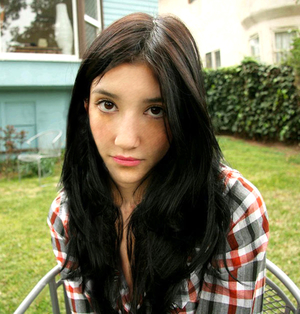
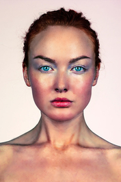
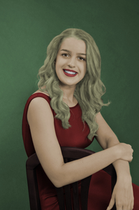
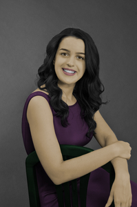
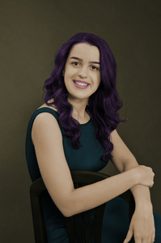
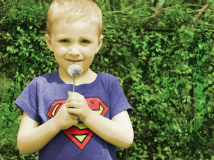
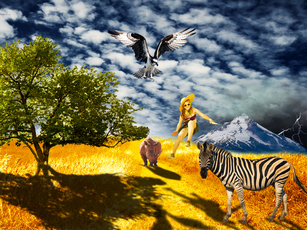

U ovoj vježbi sam izrađivala svoj vlastiti font u programu koji se zove FontForge na način da sam uz pomoć Bezierovih krivulja crtala slova svog imena i prezimena te hrvatske slovne znakove. U nastavku se nalazi link na PDF dokument s mojim vlastitim fontom:
1. vježbaOva vježba sastoji se od crtanja Bezierovih krivulja u vektorskom programu uz pomoć koordinatnog sustava. Vježbu sam radila u Illustratoru te se u nastavku nalazi link na PDF dokument:
2. vježbaTreću vježbu radila sam u Illustratoru te sam uz pomoć slike cvijeta morala Bezierovim krivuljama nacrtati taj cvijet koristeći swatch boje, transformacije, multipliciranje i grupiranje. U nastavku se nalazi PDF dokument na moj rad:
3. vježbaČetvrta vježba sastoji se od izrade objekata koji se sastoje od više zatvorenih krivulja, dodavanja i oduzimanja krivulja već postojećim objektima te dodavanja radijalnog, linearnog i mesh
gradijenta. U nastavku se nalazi link na PDF dokument sa zadatkom iz vježbe:
Sve vježbe piksel grafike radila sam u Photoshopu.
Peta vježba sastoji se od retuširanja, odnosno selekcija pomoću Lasso Tool, uklanjanja nedostataka na slici te od lokalnih i globalnih korekcija boja.
 U ovoj vježbi radi se koloriranje crno-bijelih fotografija. Određeni dijelovi se selektiraju i stvaraju se maske na kojima se skrivaju ili otkrivaju efekti kolorizacije.
   U sedmoj vježbi radi se fotomontaža, što znači da se izrezuju određeni dijelovi slike koji se potom spajaju u jednu cjelinu. Glavni cilj je da krajnji rezultat izgleda što realističnije što se postiže dodavanjem sjena na objekte te korekcijom boja.
U ovoj vježbi obrađuje se video u Premieru i Photoshopu kako bi se na kraju dobio kinemagraf.
U devetoj vježbi se uz pomoć Premiera obrađuju video, zvuk i efekti.